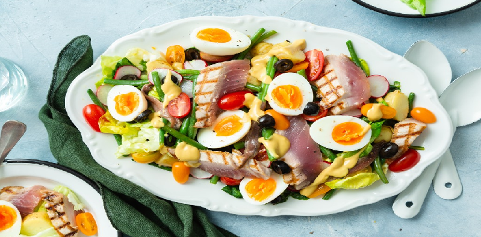

Franse salade niçoise is een perfecte en smaakvolle salde om te serveren als voorgerecht.
Ingrediënten
500 gram koelverse gebroken sperziebonen
2 eieren
250 gram cherrytomaten
½ rode ui
320 gram tonijnstukken in olie
1 teen knoflook
4 eetlepels honing-mosterddressing
120 gram zwarte olijven zonder pit
Bereidingwijze
Kook de sperziebonen in ruim kokend water met zout in ca. 8 min beetgaar. Giet de bonen
af en spoel in een vergiet met koud water af en laat uitlekken.
Kook ondertussen de eieren in 8 min. hard en snijd in partjes.
Halveer de tomaatjes en bak het stokbrood in de oven af volgens aanwijzingen op verpakking.
Laat de tonijn uitlekken en verdeel in stukken. Snijd de ui in ringen en pers de knoflook.
Meng de bonen, tomaat, tonijn, ui, knoflook en dressing erdoor en breng op smaak met peper en zout.
Verdeel de salade over de borden en garneer met partjes ei en olijven. Serveer het stokbrood erbij.

Tip Lekker met knapperig (stok)brood met roomboter.